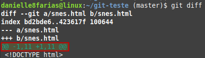
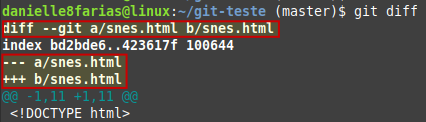
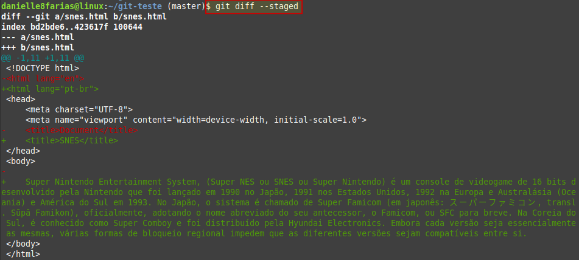
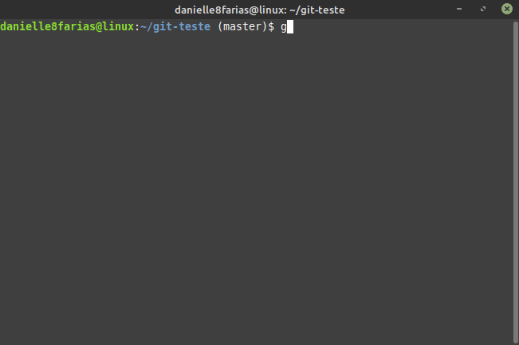
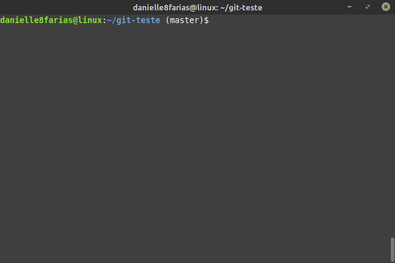

Para saber o que foi modificado em um arquivo rastreado do repositório, mas que ainda não foi adicionado um commit sobre, usamos o comando:
$ git diff
- $ indica que você deve usar o usuário comum para fazer essa operação.
Exemplo:
Temos o arquivo inicial abaixo

Em seguida, fizemos as seguintes modificações

Ao digitar o comando diff, temos:

Assim podemos ver (escrito em verde) quais partes do arquivo foram adicionadas.
Em vermelho, as partes que foram retiradas ou modificadas.

E o que está escrito com a cor branca aquilo que foi mantido (não houve modificação).
O comando
$ git diff HEAD
É semelhante ao que usamos anteriormente.
No cabeçalho, temos que 11 linhas foram subtraídas ou modificadas a partir da linha 1 e também 11 linhas foram adicionadas a partir da primeira, conforme podemos ver em destaque na imagem abaixo.
Temos também os marcadores de modificação, que o git chama de a e b. Sendo a o arquivo como ele estava anteriormente e b o arquivo atual.

Ao adicionar o arquivo com o comando git add se usarmos o git diff novamente, não será retornado nada.
Para verificar as mudanças desse arquivo (que agora está no index) usamos o comando:
$ git diff --staged

É importante notar que o comando git diff retorna as modificações de todos os arquivos. Caso queira que seja mostrado de apenas um arquivo em específico, digite:
$ git diff <nome_do_arquivo>
- digite o nome do arquivo sem os sinais < >.
Histórico das modificações
O comando
$ git log -p
faz a junção dos comandos log e diff; mostrando todas as alterações que foram feitas no(s) arquivo(s) rastreada(s) pelo Git. Pressione ENTER para descer a página e ao chegar ao fim, pressione q para sair.
Com o comando
$ git log -p -<n>
É possível ver um determinado número de históricos das modificações. Sendo o <n> o número de histórico de modificações que gostaria de ver, a partir do último (caso não queira ver tudo).
